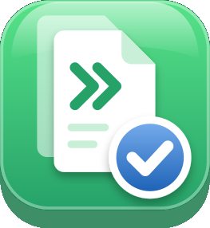
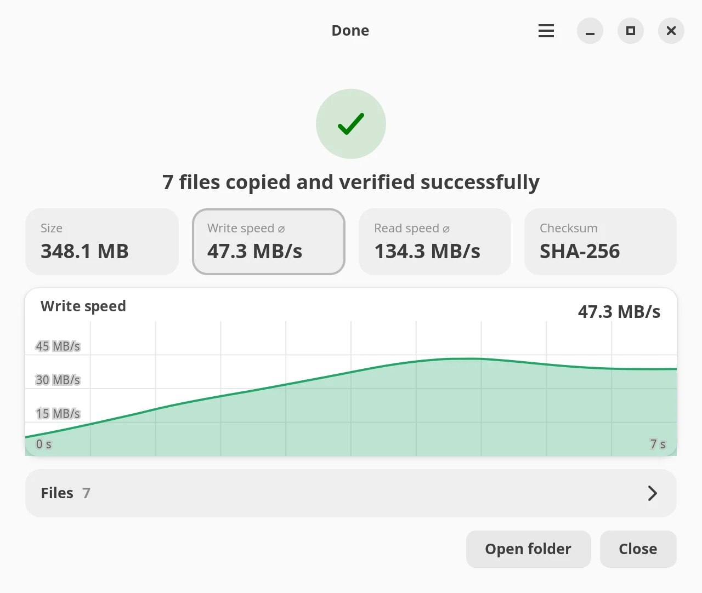
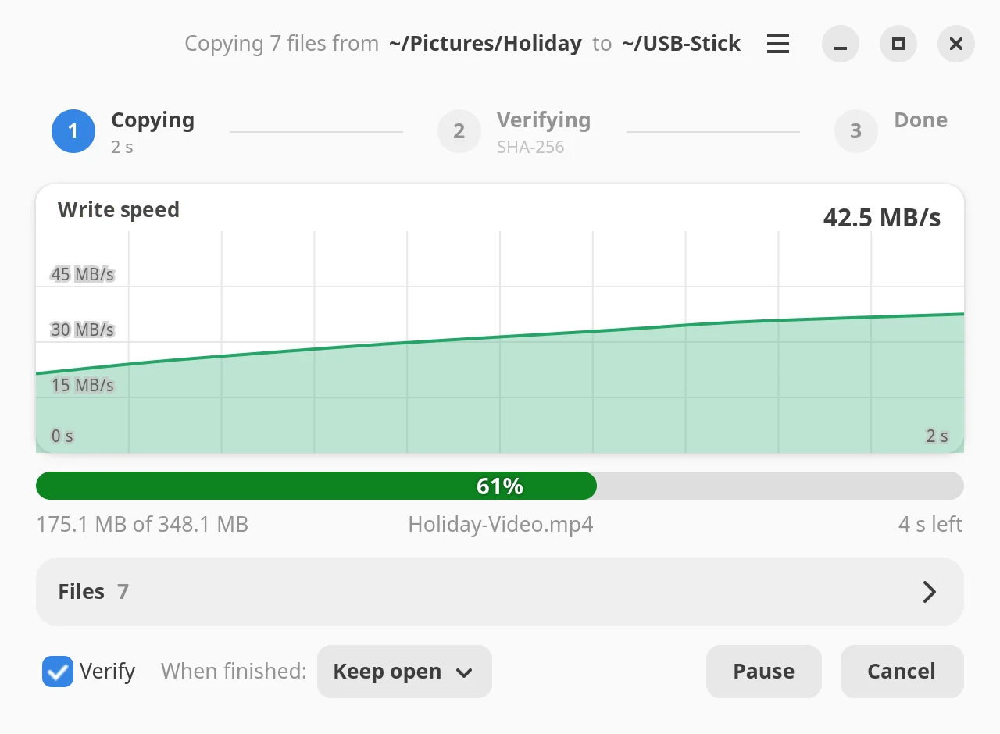
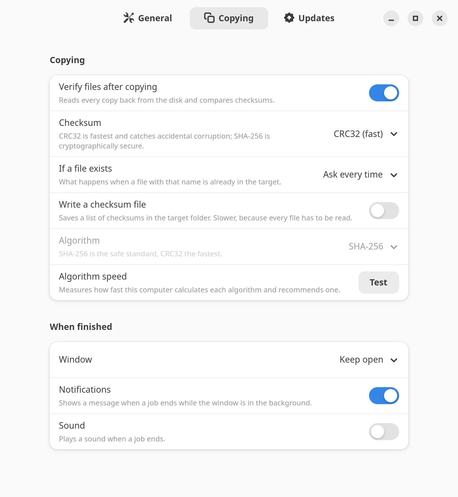
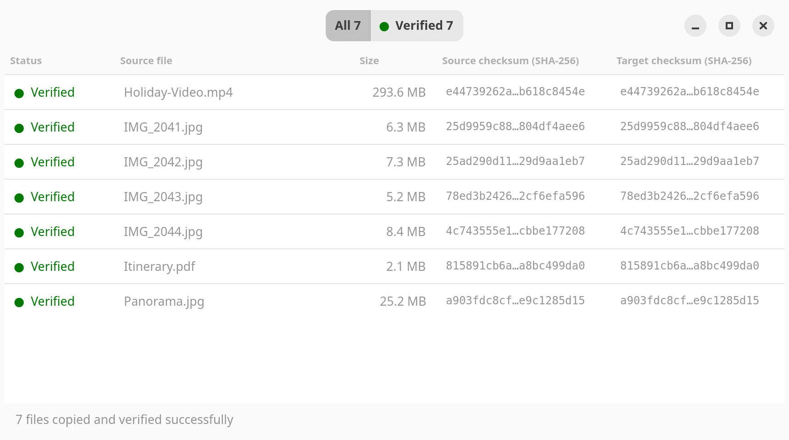

TrustCopy
Copies you can trust.
Fast, verified copying and moving from the right-click menu of GNOME Files.
A copy that is checked, not assumed.
Normal copying assumes the copy is fine. TrustCopy checks, so a bad copy is reported instead of discovered months later.
Every file is hashed while it is read, then the copy is flushed, read back from the disk and compared. A bad copy never replaces your old file, and a moved source goes only after its own copy is verified.

Everything a file copy should do.
Small, native and out of your way until you need it.
✔Verified copies
Each copy is read back from the disk and compared. Pick CRC32 (fast, default) or SHA-256.
➜Safe moves
A source is deleted only after its own copy has been verified.
◔A live view
Three steps, a speed graph, time remaining and a status for every file.
⛨No half-written files
A cancel or a power cut never leaves a damaged file under its real name.
≡Checksum file
Optional SHA256SUMS in the target folder, ready for HashTally or sha256sum -c.
⚖Conflicts your way
Ask each time (keep both, skip, overwrite if newer, overwrite) or set a rule. A colour-coded hint compares the two files for you.
◌Sparse files stay sparse
A VM disk or a preallocated download keeps its holes on the target; only its data is read and written.
⏻Switch off when done
After a long job the computer can suspend or shut down, after a countdown you can cancel.
⏱Speed test
Shows which checksum is fastest on your computer and recommends the fastest secure one.
❚❚Pause, resume, queue
Jobs run one after the other, and a waiting job tells you its place and what runs now. Errors are retried, and “Retry failed” repeats only those files.
◐Native look
GTK 4 and libadwaita, light and dark, in ten languages. With python3-nautilus, an entry of its own in the context menu, if you like.
›_Command line too
trustcopy copy --to /media/usb ~/Pictures, with plain-text output and clear exit codes.
Looks like it belongs.
Follows your system theme, light or dark.



Two ways, pick one.
Every release is signed. The settings can also check for a newer version once a week, if you switch that on; nothing is sent or installed.
Install script
Any distribution. Installs for your user only, no root. Running it again from a newer release updates.
.deb
Debian, Ubuntu and Linux Mint. Installs for all users and pulls in GTK 4 and libadwaita. Download trustcopy_<version>_all.deb from the latest release, double-click it or:
The right-click entries live in your own home folder, so TrustCopy creates them when you open it for the first time (find it in the Activities overview).
- Needs a GNOME-family desktop with Nautilus: Ubuntu 24.04+, Fedora 40+, Debian 13+, Linux Mint 22+. Nemo and Caja get the same Scripts entries.
- Then right-click files › Scripts › TrustCopy: Copy to…
- Signed. Every release has a
SHA256SUMSfile with a GPG signature, covering the script and the .deb. The fingerprint isE7AA EB31 A4DE CF99 B314 7E1D FAAB 30B5 FD49 0E93 - How to verify the download